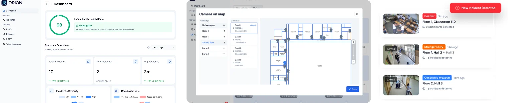

ORION: computer vision for school safety
ORION is a school safety system from BorneoLand AI. It uses computer vision to turn a school's existing CCTV cameras into an always-on safety monitor that alerts staff when something goes wrong.
The product
Schools already record video, but nobody can watch every screen all day. The company's site cites a 2023 TIMSS survey in which 56% of Malaysian Form 2 students reported being bullied, and argues that most incidents are never seen or recorded.
ORION watches the camera feeds instead. As the public site describes it, the system offers:
- Behaviour analysis that flags fighting, bullying and suspicious behaviour.
- Facial recognition for students, staff and visitors, with alerts when an unrecognised person enters the campus.
- Prohibited zone monitoring, with notifications when someone enters a restricted area.
- Concealed weapon detection.
- An interactive campus map with camera locations, incident hotspots and live alerts.
- An analytics dashboard with trends, hotspots and a school safety health score.
- Alerts with video clips and locations sent to staff by email, SMS or WhatsApp.
The workflow: existing cameras capture video, ORION analyses it in real time, staff receive alerts and the system produces reports. Administrators set up the school's buildings, floors, classes and restricted zones, and organise cameras by building, floor and zone. Schools can run ORION as a cloud-hybrid service that manages several campuses from one dashboard, or host it fully on their own servers so monitoring continues without an internet connection. According to the site, ORION is piloting in two schools. More at blaitech.com.

My role
Lead Computer Vision Engineer at BorneoLand AI since December 2025.